Code
```{r}
##| Generating a sample
sample <- runif(n = 100, min = 0, max = 1)
###| Scatterplot
plot(sample)
```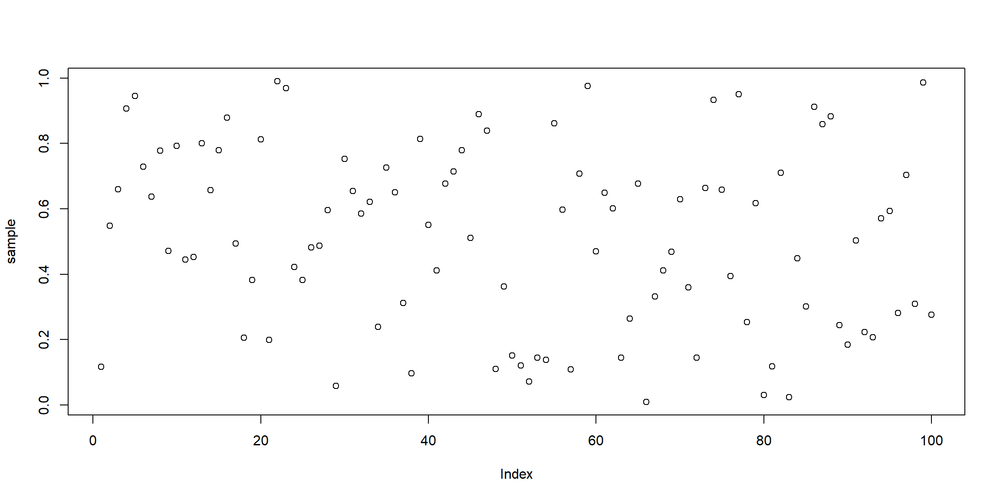
In R, it is very easy to create scatter plots, line graphs, histograms and box plots. We will cover how to do all 4 using base R commands.
Other sections will cover how to do these in other packages (namely ‘ggplot2’) to get more control over formatting.
We will start by generating a sample from a \(\text{Uniform}[0,1]\) distribution and plotting a scatter plot.
```{r}
##| Generating a sample
sample <- runif(n = 100, min = 0, max = 1)
###| Scatterplot
plot(sample)
```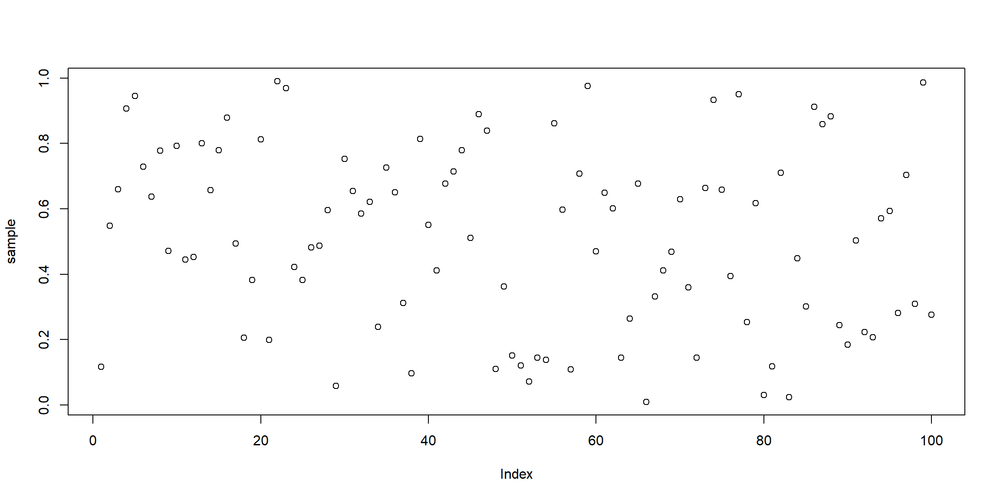
If we sort the sample by size, we can create a plot that increases from left to right.
```{r}
###| Ordered sample scatter plot
plot(sort(sample))
```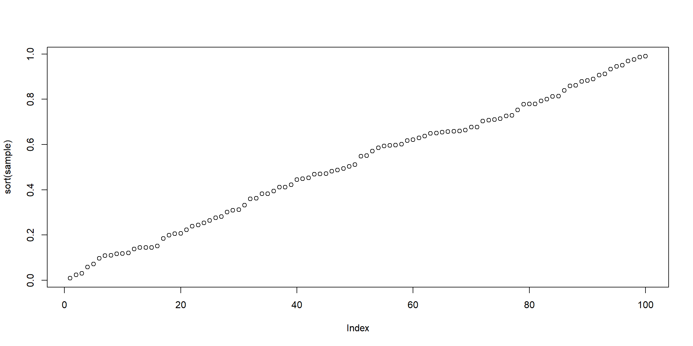
The x and y labs are not clear. We should change these by adding in the xlab and ylab arguments. We should also add a title for clarity!
```{r}
###| x and y labels and title (called main)
plot(sort(sample), xlab = "Ordered index", ylab = "Sample", main = "Title")
```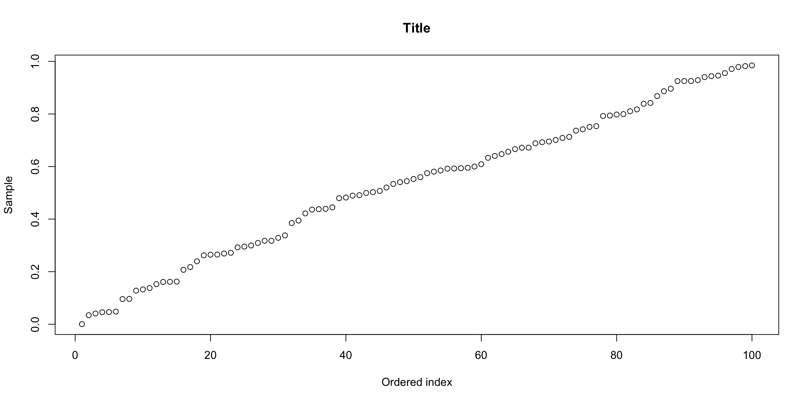
We observe a linear relationship between the ordered samples. Let us test this by adding a line to this graph using ‘abline()’.
```{r}
###| Using abline
plot(sort(sample), xlab = "Ordered index", ylab = "Sample", main = "Title")
abline(a = 0,b=0.01)
```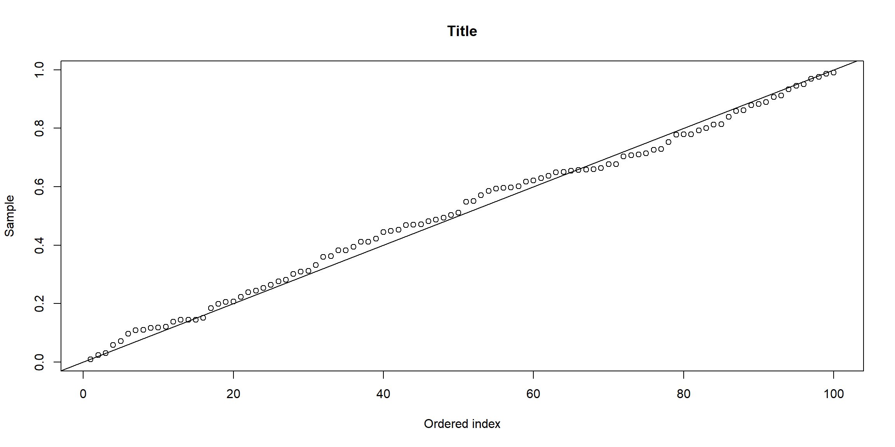
It is quite hard to see both the points and the line at the same time. We can change the aesthetics (colour, shape and size) to make this easier to see. Additional point shapes are available here.
```{r}
###| Aesthetics - colour and points
plot(sort(sample), xlab = "Ordered index", ylab = "Sample", main = "Title",
col = "red", pch = 3) # we start a new line for readability :)
abline(a = 0,b=0.01, col = "blue")
```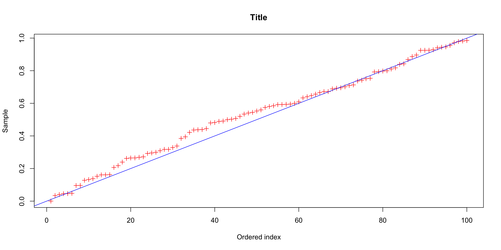
Suppose we wanted to add additional lines, at the Sample = 0.5 and at the 50th index. We can add these using ‘abline()’. We can also distinguish them by changing colour, line thickness and line type. Additional details are available here.
```{r}
###| Aesthetics - line
plot(sort(sample), xlab = "Ordered index", ylab = "Sample", main = "Title",
col = "red", pch = 3)
abline(a = 0,b=0.01, col = "blue")
abline(h=0.5, col = "black", lwd = 1, lty = 3) # Note that h here is a horizontal line at sample = 0.5
abline(v=50, col = "black", lwd = 1, lty = 4) # v here is a vertical line at index = 50
```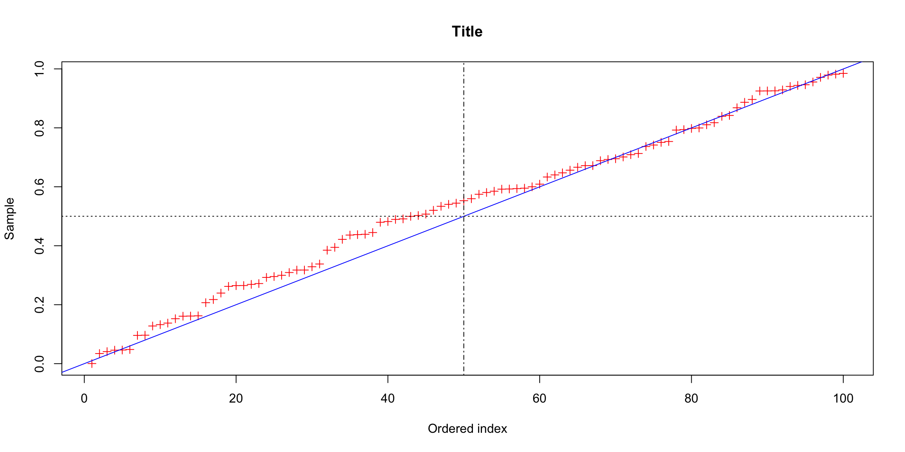
Now, we move to generating a line graph. We will generate a new sample, this time from a \(\text{Normal}(0,1)\) distribution.
```{r}
###| Generate sample
sample <- rnorm(n = 30, mean = 0, sd = 1)
###| Line graph
plot(sample, type = "l")
```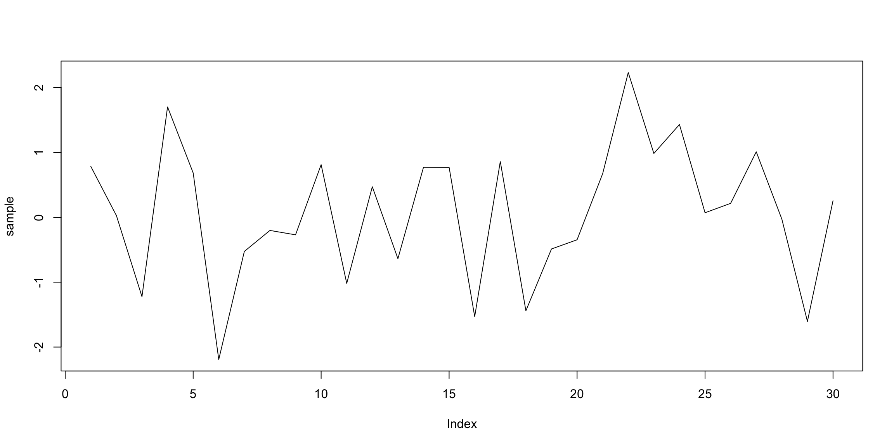
Suppose we also want to show the points. We change the type from “l” to “b”.
```{r}
###| Line graph with points
plot(sample, type = "b")
```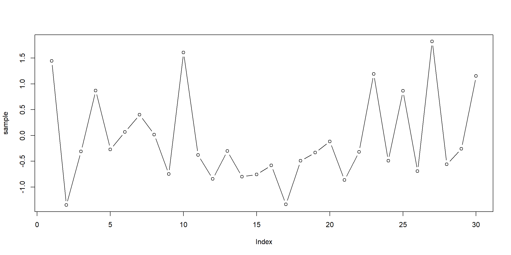
Again, we can play with the aesthetics of these graphs.
```{r}
###| Line graph aesthetics
plot(sample, type = "l", lwd = 2, lty = 3)
plot(sample, type = "b", lwd = 1, lty = 5, pch = 17, col = 3)
```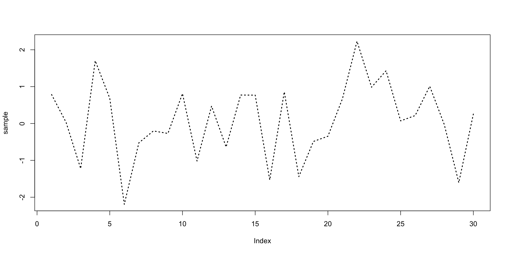
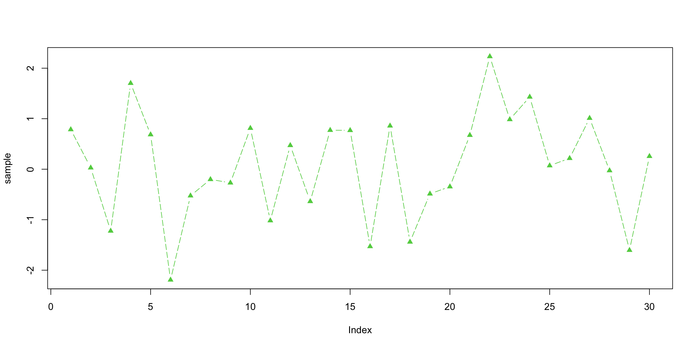
Suppose we have another sample generated from a \(\text{Normal}(0,2)\). We can show both lines on the same graph.
```{r}
###| For reproducibility
set.seed(68)
###| Generate 2 samples
sample1 <- rnorm(n=30, mean = 0, sd = 1)
sample2 <- rnorm(n=30, mean = 0, sd = 2)
###| Line plot with multiple lines
plot(sample1, type = "l")
lines(sample2)
```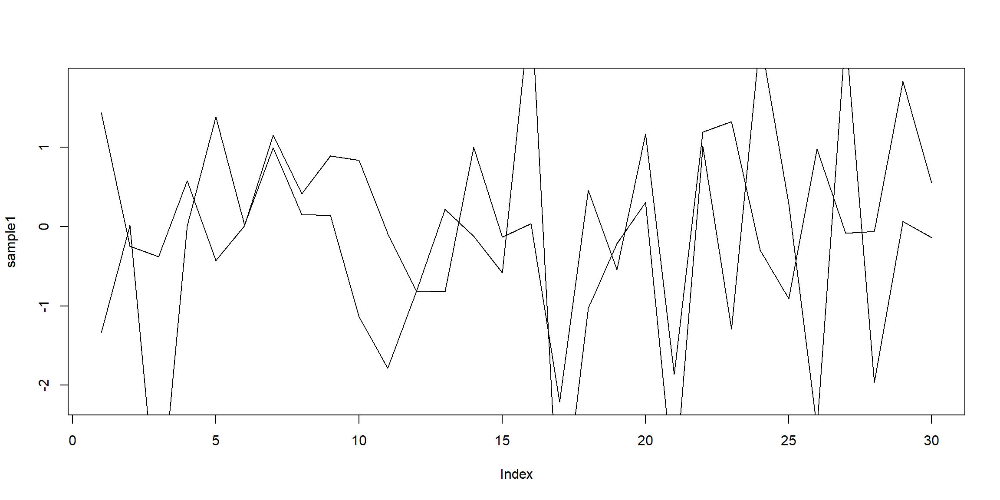
We have something, but it appears the top is cut off the graph (this is beacuse we are adding sample 2 onto sample 1 and sample 2 has a larger range). We can change the y axis limits.
```{r}
###| Line plot with multiple lines with limits
plot(sample1, type = "l", ylim = c(-4,4))
lines(sample2)
```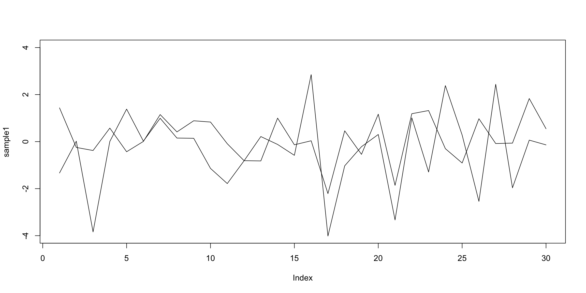
We should also change the colours for readability.
```{r}
###| Line plot with multiple lines with limits
plot(sample1, type = "l", ylim = c(-4,4), col = "blue")
lines(sample2)
```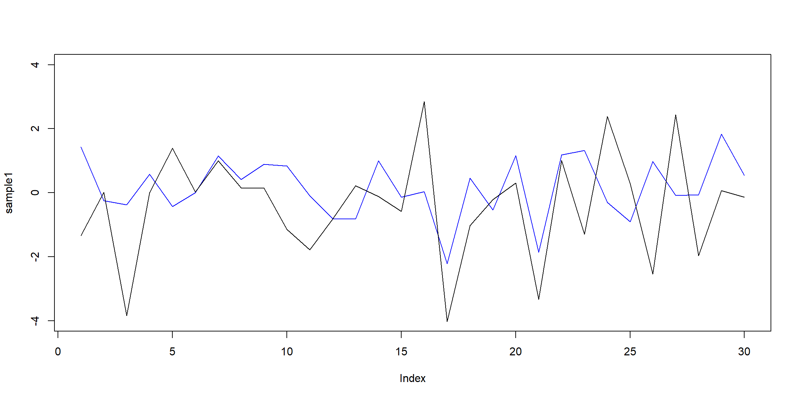
We can have different types of lines in the same graph as well.
```{r}
###| Line plot with multiple line types
plot(sample1, type = "l", ylim = c(-4,4), col = "blue")
lines(sample2, lty = 4, type = "b")
```
Suppose instead we want to look at the distribution of the sample, and test if it aligns with the distribution we expect. To do this, we will up the number of samples (200) and will look at the histogram graph.
```{r}
###| Sample
sample <- rnorm(n=200, mean = 0, sd =1)
###| Histogram
hist(sample)
```
If we want to have the probability on the y axis instead, we need to change the freq argument to FALSE or we change the prob argument to TRUE.
```{r}
###| Density graph
hist(sample, freq = FALSE)
hist(sample, prob = TRUE)
```The widths of the boxes are quite large. We can change this with the breaks argument.
```{r}
###| Set number of breaks
hist(sample, breaks = 10) # 10 boxes
hist(sample, breaks = 20) # 20 boxes
###| Different size boxes
hist(sample, breaks = c(min(sample),-1.5,0,0.5,1,max(sample)))
# need min and max to ensure range works
```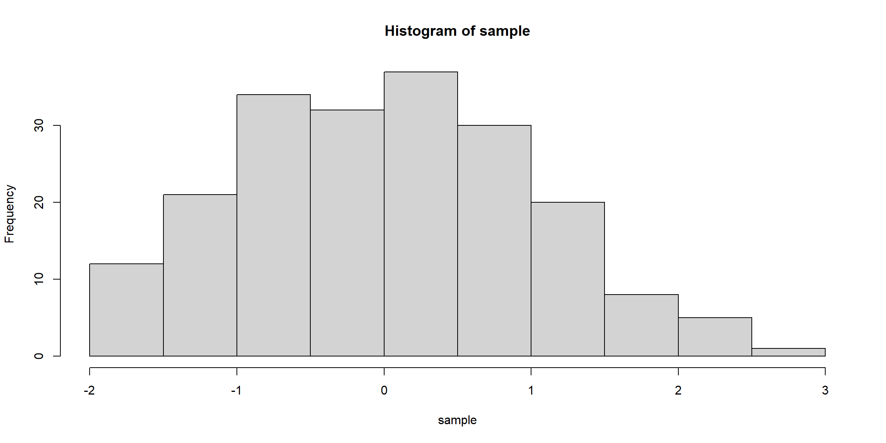
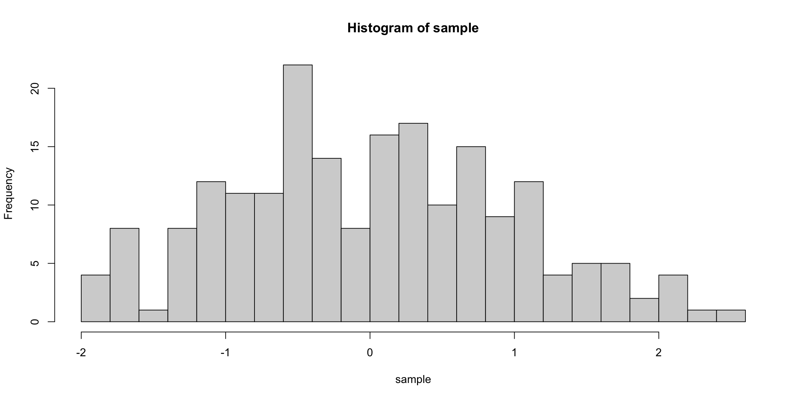
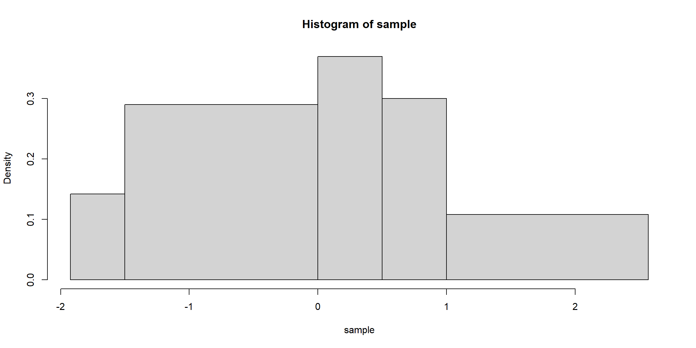
We can also change the labels and add a title.
```{r}
###| Labels and title
hist(sample, breaks = 20, xlab = "Sample", main = "Title")
```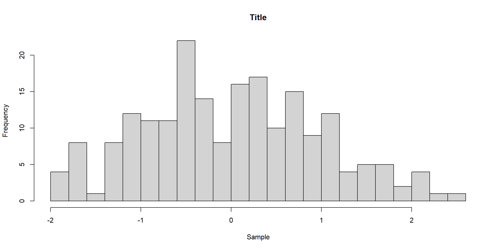
Now, lets compare this to the normal distribution. First, we can add the density curve of the sample.
```{r}
sample <- rnorm(n = 1000, mean = 0, sd = 1) # Increasing sample count
###| Density curve
hist(sample, prob = TRUE)
lines(density(sample))
```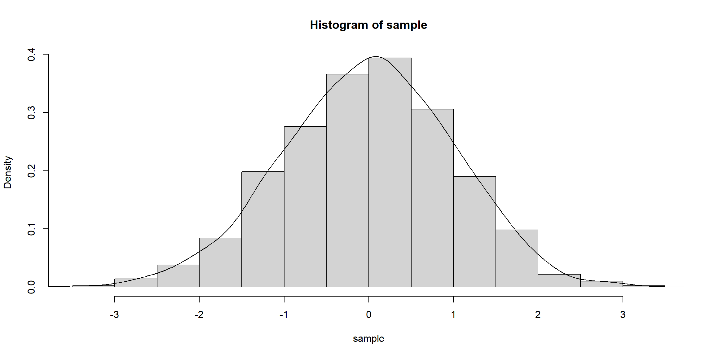
We can then add the normal distribution curve on top to allow comparison.
```{r}
###| Normal
seq <- seq(from = -3, to = 3, length = 1000)
norm_seq <- dnorm(seq(from = -3, to = 3, length = 1000), mean = 0, sd = 1)
###| Density curve
hist(sample, prob = TRUE, ylim = c(0,max(norm_seq)))
lines(density(sample))
lines(seq,norm_seq, col = "red",lwd = 2)
```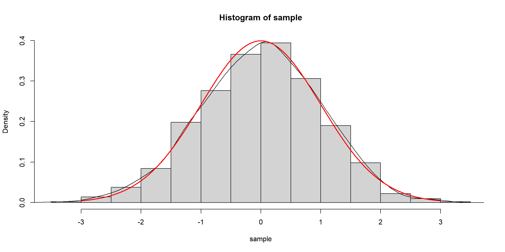
The sample distribution is very similar to the normal distribution curve (although the sample has 2 peaks rather than 1). However, it is confusing to have 2 lines without any labels. So, let us add a legend. Additional details appear here.
```{r}
###| Normal
seq <- seq(from = -3, to = 3, length = 1000)
norm_seq <- dnorm(seq(from = -3, to = 3, length = 1000), mean = 0, sd = 1)
###| Density curve
hist(sample, prob = TRUE, ylim = c(0,max(norm_seq)))
lines(density(sample))
lines(seq,norm_seq, col = "red",lwd = 2)
legend(x = "topright", # position
legend = c("Sample curve","Normal curve"),
col = c("black","red"),
lwd = c(1,2))
```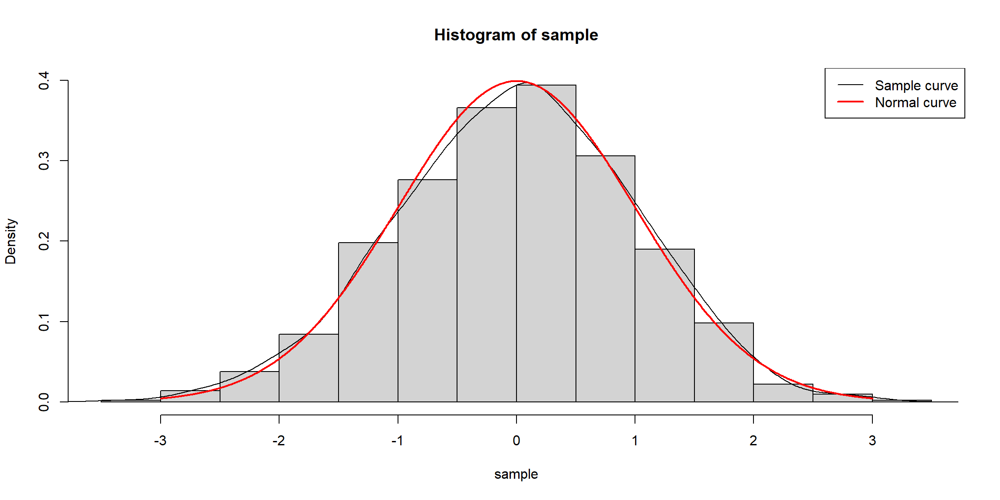
Finally, we will consider box plots. We can plot the box plot of a single sample.
```{r}
###| Generating a sample
sample <- rnorm(n = 100, mean = 5, sd = 2)
###| Boxplot
boxplot(sample)
```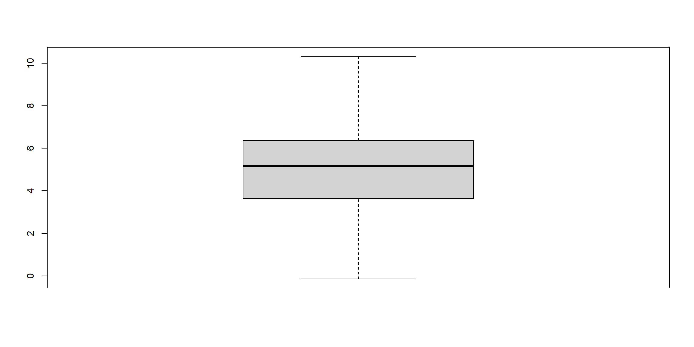
For multiple boxplots, we can construct a data frame and plot accordingly.
```{r}
###| Data frame
df <- data.frame("A" = rnorm(n = 10, mean = 0, sd = 1),
"B" = rnorm(n = 10, mean = 0, sd = 1),
"C" = rnorm(n = 10, mean = 0, sd = 1))
###| Box plot
boxplot(df)
```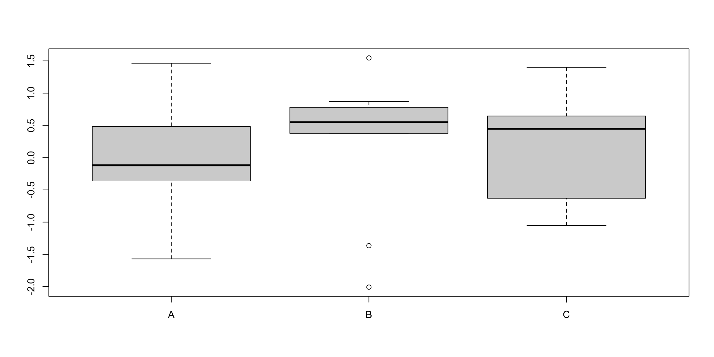
We can add labels and titles.
```{r}
###| Box plot with labels
boxplot(df, main = "Title", ylab = "Sample values", xlab = "Categories")
```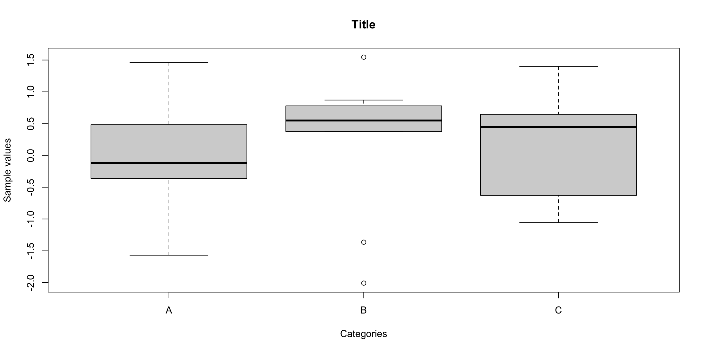
Generate scatterplots, line graphs, histograms and box plots with samples from Poisson and Binomial distributions. Add legends and appropriate titles to each graph.